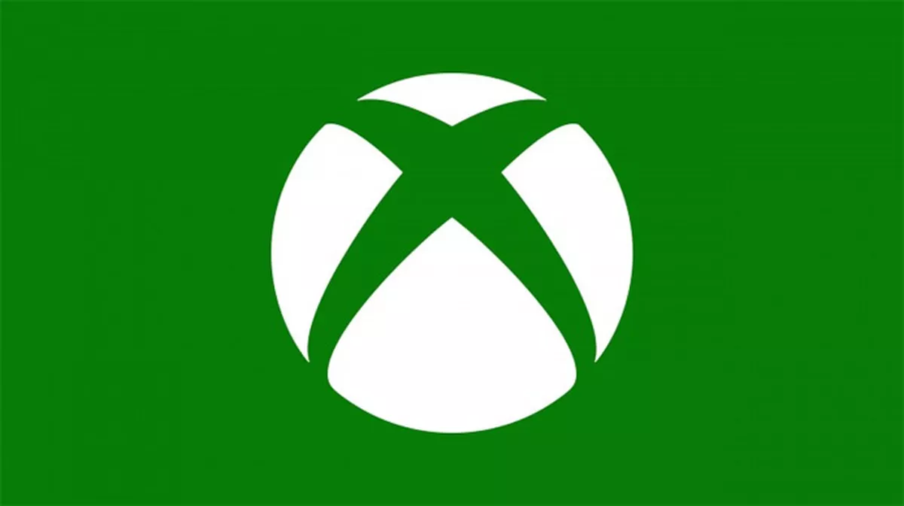
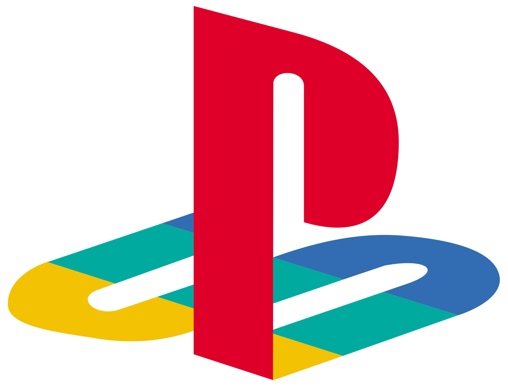

Bem vindos(as) ao Games On
Sua plataforma online relacionada á jogos!

Plataformas mais conhecidas dentro do mundo dos jogos
Clique na plataforma desejada para ser dirigido á ela




Historia do mundo dos jogos:
A história dos jogos digitais teve início quando os acadêmicos começaram a projetar jogos simples, simuladores e programas de inteligência artificial, como parte de suas pesquisas em ciência da computação. Somente a partir das décadas de 1970 e 1980 é que os jogos eletrônicos se tornaram populares, quando jogos de arcade, console de jogos eletrônicos e jogos de computador foram introduzidos ao público em geral. Desde então, os jogos eletrônicos tornaram-se uma forma popular de entretenimento e uma parte da cultura moderna em diversas regiões do mundo.
Os jogos foram desenvolvidos para ampliar a mente e desenvolver melhor o cérebro nas atividades escolares, como uma consequência das pesquisas da computação em áreas como a inteligência artificial. A comercialização do UNIVAC I (considerado o primeiro computador comercial da história) em 1951 abriu caminho para a adoção dos computadores por instituições acadêmicas, órgãos de pesquisa e empresas em todo o mundo desenvolvido. Devido ao alto custo, grande consumo de energia e a necessidade de se empregar uma equipe altamente treinada para manter e operar as máquinas, a tecnologia da computação ficou inicialmente limitada às organizações maiores. Por conta disso, a criação dos primeiros jogos eletrônicos limitou-se a testes e demonstrações de teorias relacionadas a áreas como a interação humano-computador, a aprendizagem adaptativa e estratégia militar
Informações retiradas do wikipedia, para saber mais clique aqui ->